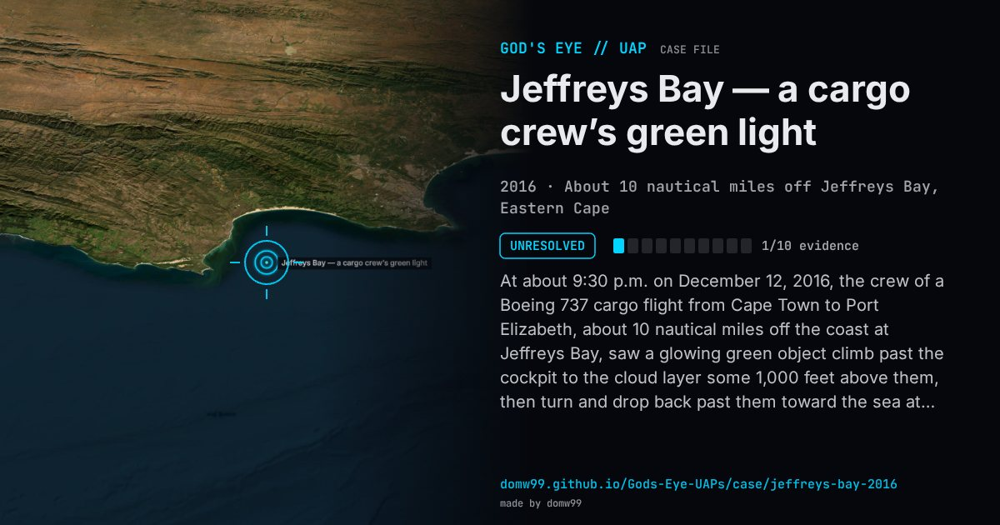

Jeffreys Bay — a cargo crew’s green light

At about 9:30 p.m. on December 12, 2016, the crew of a Boeing 737 cargo flight from Cape Town to Port Elizabeth, about 10 nautical miles off the coast at Jeffreys Bay, saw a glowing green object climb past the cockpit to the cloud layer some 1,000 feet above them, then turn and drop back past them toward the sea at high speed. Port Elizabeth air traffic control, fearing a vessel or aircraft in distress had fired a flare, asked the National Sea Rescue Institute to check; its Jeffreys Bay station watched overnight. The object was not seen again and no craft was overdue.
Explanation
A green parachute flare was suspected first and ruled out because a flare cannot climb that high; the NSRI found no vessel or aircraft overdue or missing. Green is the usual colour of a bright meteor, but a meteor does not climb, which is what the crew described. The NSRI called the incident “a mystery”.
What was seen
Shape: A glowing green object
Witnesses: The captain and first officer of a Boeing 737 freighter flying from Cape Town to Port Elizabeth
Duration: Seconds